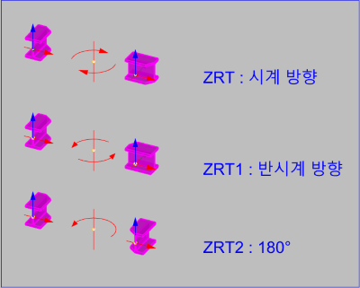

ZRT / ZRT1 / ZRT2
선택한 Object를 Object 중심을 기준으로 절대좌표 Z축 방향으로 회전시키는 명령 모음입니다. AutoCAD에서도 동일한 기능으로 사용됩니다.
선택 객체를 객체 중심 기준으로 절대좌표 Z축에 맞춰 -90도(ZRT), +90도(ZRT1), 180도(ZRT2) 회전을 빠르게 적용해 객체 방향을 맞출 때 사용합니다.
| 명령어 | 기능 | 회전 기준 |
|---|---|---|
ZRT | Object를 Object 중심 기준으로 절대좌표 Z축에 대해 시계방향으로 Rotate 합니다. | Z축 / -90도 |
ZRT1 | Object를 Object 중심 기준으로 절대좌표 Z축에 대해 반시계방향으로 Rotate 합니다. | Z축 / +90도 |
ZRT2 | Object를 Object 중심 기준으로 절대좌표 Z축에 대해 180도 방향으로 Rotate 합니다. | Z축 / 180도 |
ZRT, ZRT1, ZRT2 중 필요한 명령어를 입력하고 Enter를 누릅니다.